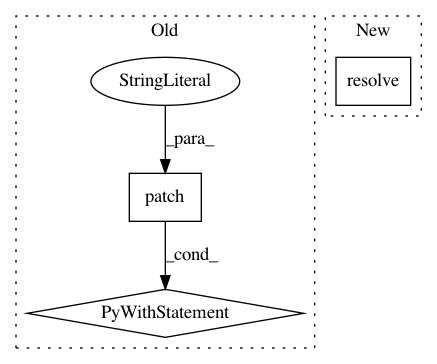

32f384c59f562061d0f506f3d5c3647420e1054f,api/python/tests/integration/test_packages.py,PackageTest,test_browse_package_from_registry,#PackageTest#,157
Before Change
in [x[0][0] for x in pkgmock.call_args_list]
// default remote registry failure case
with patch("quilt3.packages.get_from_config", return_value=None):
with pytest.raises(QuiltException):
Package.browse("Quilt/nice-name")
def test_local_install(self):
Verify that installing from a local package works as expected.
with patch("quilt3.packages.get_from_config") as get_config_mock, \
patch("quilt3.Package.push") as push_mock:
After Change
def test_browse_package_from_registry(self):
Verify loading manifest locally and from s3
with patch("quilt3.Package._from_path") as pkgmock:
registry = LOCAL_REGISTRY.resolve().as_uri()
pkg = Package()
pkgmock.return_value = pkg
top_hash = pkg.top_hash
In pattern: SUPERPATTERN
Frequency: 3
Non-data size: 3
Instances
Project Name: quiltdata/quilt
Commit Name: 32f384c59f562061d0f506f3d5c3647420e1054f
Time: 2019-06-03
Author: dima@quiltdata.io
File Name: api/python/tests/integration/test_packages.py
Class Name: PackageTest
Method Name: test_browse_package_from_registry
Project Name: quiltdata/quilt
Commit Name: 32f384c59f562061d0f506f3d5c3647420e1054f
Time: 2019-06-03
Author: dima@quiltdata.io
File Name: api/python/tests/integration/test_packages.py
Class Name: PackageTest
Method Name: test_remote_install
Project Name: quiltdata/quilt
Commit Name: 32f384c59f562061d0f506f3d5c3647420e1054f
Time: 2019-06-03
Author: dima@quiltdata.io
File Name: api/python/tests/integration/test_packages.py
Class Name: PackageTest
Method Name: test_local_install